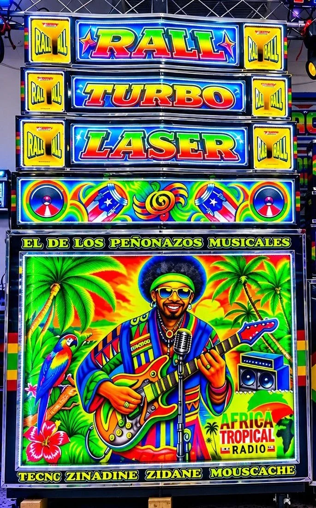
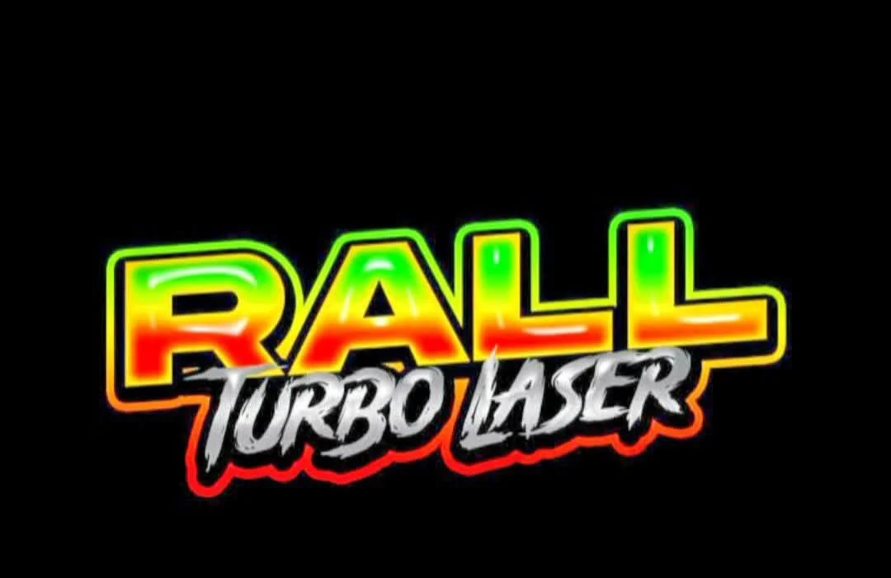

SONIDO QUE
SE SIENTE
Una descarga de energía hecha para bailarla, cantarla y sentirla de verdad.
SUBE EL VOLUMENLa casa oficial de RALL Turbo Laser. Una máquina que se respeta, DJs que ponen a vibrar la Costa y peñonazos que se viven de verdad.

En la Costa, un picó es mucho más que música a todo volumen. Es barrio, es baile, es esquina, es familia. Es una forma de vivir.
RALL Turbo Laser lleva esa esencia en cada color y cada descarga musical. Un homenaje a nuestras raíces, a los ritmos que nos unen y a la alegría que se contagia apenas suena el primer tema.
MIRA LA GALERÍA COMPLETANo importa dónde estés: en el barrio, en otra ciudad o al otro lado del mundo. Cuando la máquina suena, todos estamos conectados.
Cuando Ronald encienda la señal, podrás entrar aquí mismo.

LA PRÓXIMA DESCARGA SE ESTÁ COCINANDOPRONTO VOLVEMOS A ENCENDER LA MÁQUINA✳ RALL TV permite ver el directo dentro de esta página. El administrador podrá transmitir desde la cabina privada; las redes sociales se mantienen como canales alternativos.
Una descarga de energía hecha para bailarla, cantarla y sentirla de verdad.
SUBE EL VOLUMENLos colores, las calles, la gente y la sabrosura que solo nuestra tierra tiene.
HECHO EN LA COSTADonde hay música, hay encuentro. Aquí todo el mundo está invitado a gozar.
BIENVENIDO AL RALLDetrás de cada peñonazo hay técnica, pasión y pura energía. Conoce las sesiones y los momentos que hacen sonar la máquina.
Las luces. La máquina. Los vinilos. La gente en la cabina. Una colección de momentos reales y de nuestra identidad picotera.
Cuando la máquina vaya a sonar, aquí te enteras primero.
Sigue nuestras redes para no perderte la próxima fecha y transmisión.
SIGUE LA MÁQUINAFiestas, celebraciones y eventos especiales. Conversemos y pongamos a sonar esa idea.
DESDE BARRANQUILLA · PARA TODA LA COSTA